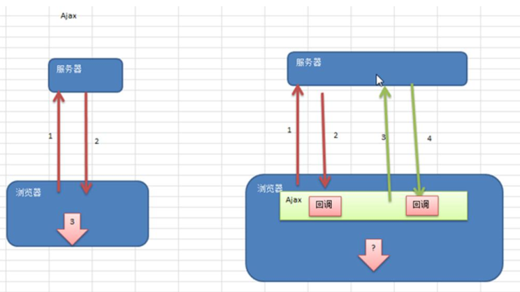
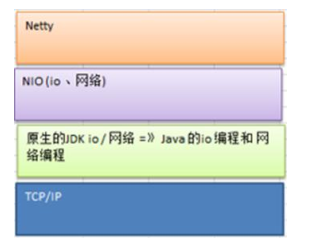
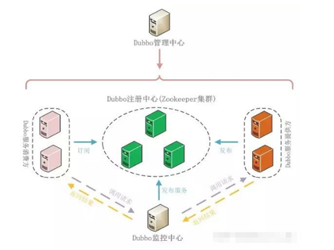
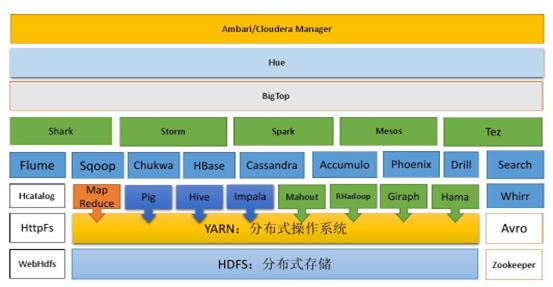
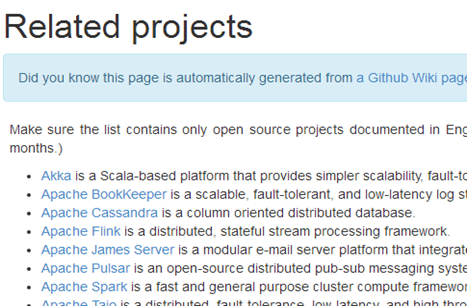

Netty 是一个异步的、基于事件驱动的网络应用框架。
学习netty之前需要先行学会（ OOP 编程、Java 多线程编程、Java IO 编程 、Java 网络编程、设计模式数据结构）。
Netty介绍
Netty 是由 JBOSS 提供的一个 Java 开源框架，现为 Github上的独立项目。
Netty 是一个异步的、基于事件驱动的网络应用框架，用以快速开发高性能、高可靠性的网络 IO 程序。

Netty主要针对在TCP协议下，面向Clients端的高并发应用，或者Peer-to-Peer场景下的大量数据持续传输的应用。
Netty本质是一个NIO框架，适用于服务器通讯相关的多种应用场景

要透彻理解Netty ， 需要先学习 NIO ， 这样我们才能阅读 Netty 的源码。
重要概念
“阻塞”与”非阻塞”与”同步”与“异步”不能简单的从字面理解，提供一个从分布式系统角度的回答。
阻塞非阻塞表示下面 买书过程中 可能出现的状态，是从 我 这个单进程角度来看待这个买书这个问题。
同步异步表示一种协作方式，是从全局更高的角度 “进程之间 合作的方式” 来看待买书这个业务。两个进程之间如果商量采用异步方式处理买书这一业务，就不存在阻塞这种状态。
同步与异步
同步和异步关注的是消息通信机制 (synchronous communication/ asynchronous communication)
所谓同步，就是在发出一个调用时，在没有得到结果之前，该调用就不返回。但是一旦调用返回，就得到返回值了。
换句话说，就是由调用者主动等待这个调用的结果。
而异步则是相反，调用在发出之后，这个调用就直接返回了，所以没有返回结果。换句话说，当一个异步过程调用发出后，调用者不会立刻得到结果。而是在调用发出后，被调用者通过状态、通知来通知调用者，或通过回调函数处理这个调用。
典型的异步编程模型比如Node.js
举个通俗的例子：
你打电话问书店老板有没有《分布式系统》这本书，如果是同步通信机制，书店老板会说，你稍等，”我查一下”，然后开始查啊查，等查好了（可能是5秒，也可能是一天）告诉你结果（返回结果）。
而异步通信机制，书店老板直接告诉你我查一下啊，查好了打电话给你，然后直接挂电话了（不返回结果）。然后查好了，他会主动打电话给你。在这里老板通过“回电”这种方式来回调。
阻塞与非阻塞
阻塞和非阻塞关注的是程序在等待调用结果（消息，返回值）时的状态.
阻塞调用是指调用结果返回之前，当前线程会被挂起。调用线程只有在得到结果之后才会返回。
非阻塞调用指在不能立刻得到结果之前，该调用不会阻塞当前线程。
还是上面的例子，
你打电话问书店老板有没有《分布式系统》这本书，你如果是阻塞式调用，你会一直把自己“挂起”，直到得到这本书有没有的结果，如果是非阻塞式调用，你不管老板有没有告诉你，你自己先一边去玩了， 当然你也要偶尔过几分钟check一下老板有没有返回结果。
在这里阻塞与非阻塞与是否同步异步无关。跟老板通过什么方式回答你结果无关。
应用场景
互联网行业
在分布式系统中，各个节点之间需要远程服务调用，高性能的 RPC 框架必不可少，Netty 作为异步高性能的通信框架，往往作为基础通信组件被这些 RPC 框架使用。

典型的应用有：阿里分布式服务框架 Dubbo 的 RPC 框架使用 Dubbo 协议进行节点间通信，Dubbo 协议默认使用 Netty 作为基础通信组件，用于实现各进程节点之间的内部通信
游戏行业
无论是手游服务端还是大型的网络游戏，Java 语言得到了越来越广泛的应用
Netty 作为高性能的基础通信组件，提供了 TCP/UDP 和 HTTP 协议栈，方便定制和开发私有协议栈，账号登录服务器
地图服务器之间可以方便的通过 Netty 进行高性能的通信
大数据领域
经典的 Hadoop 的高性能通信和序列化组件 Avro 的 RPC 框架，默认采用 Netty 进行跨界点通信
它的 Netty Service 基于 Netty 框架二次封装实现。

其他领域
